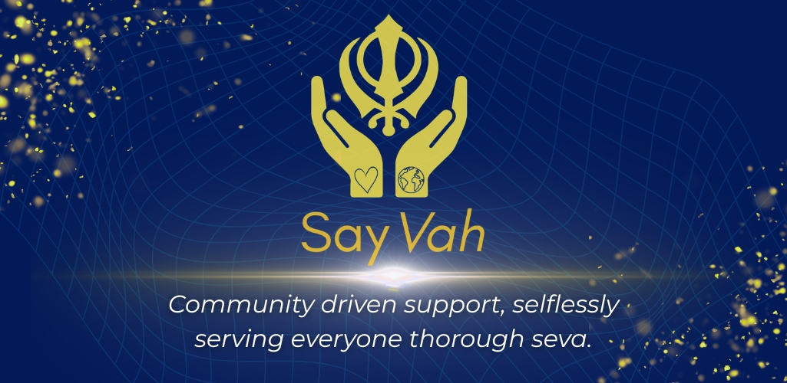
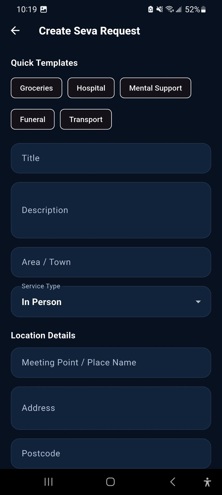
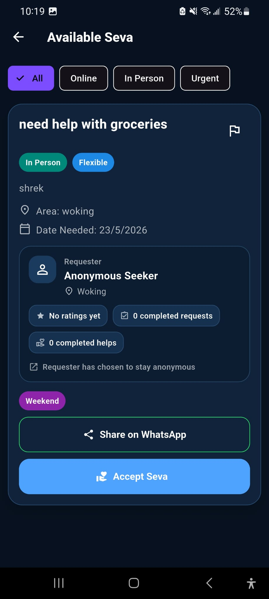
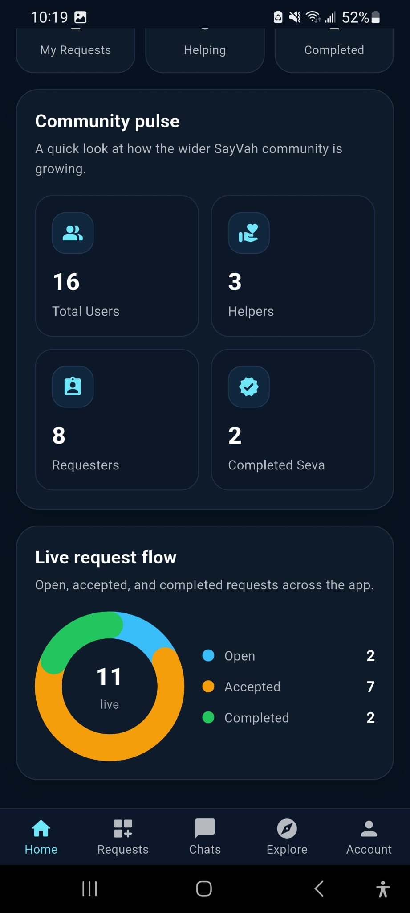
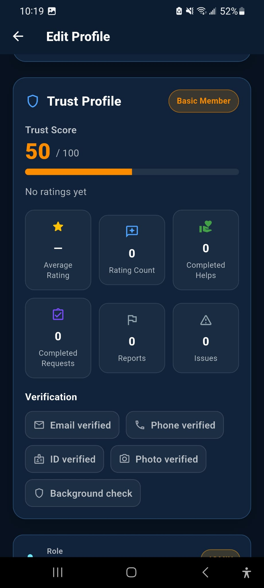
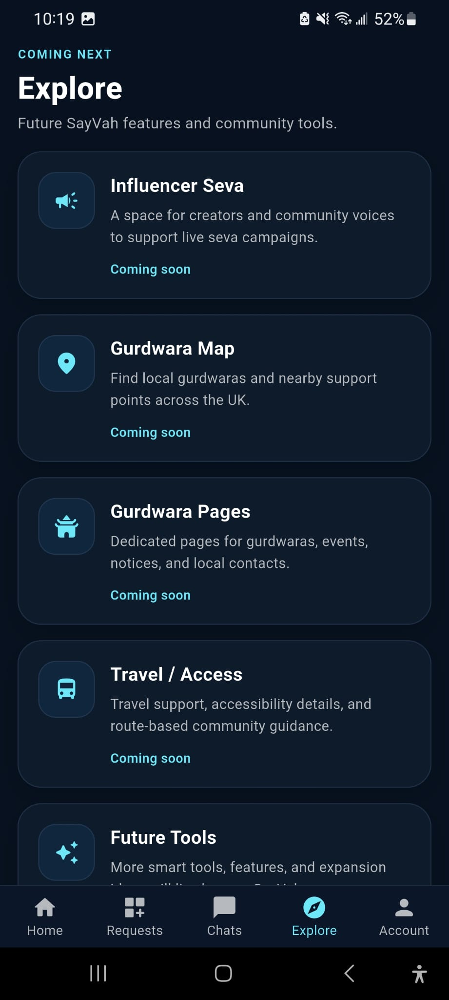
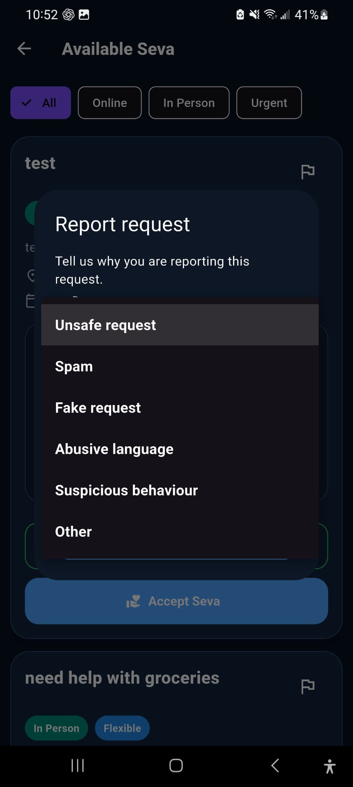
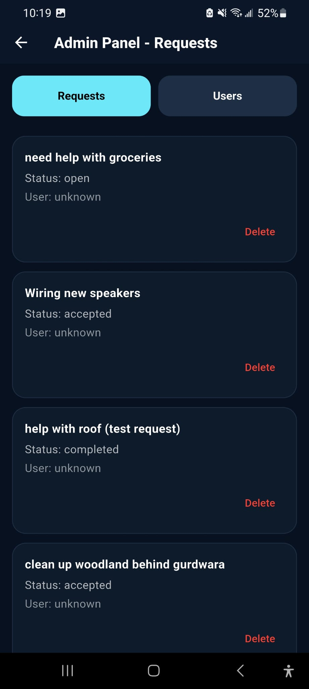

Helping the Sangat help one another.
SayVah is a Sikh community app built to help people request help, offer seva, connect with local Gurdwaras and strengthen community support. Now available to download on the App Store and Google Play.

Built for seva, support and trust.
SayVah is a dedicated community app for Sikh seva, Gurdwara connection and local support. Members of the Sangat can ask for help, offer their time, discover community activity and build trusted connections.
Request Help
Create a seva request when you need support from the community.
Offer Seva
Browse available seva opportunities and offer help where you can.
Gurdwara Connection
Stay connected with your local Gurdwaras, their events and community activity.
Trust Profiles
Profiles, trust scores and community activity help keep the app safe and reliable.
Community Pulse
See what's happening in the community and where support is needed most.
Admin Tools
Gurdwara and community admins can manage requests, review activity and support users.
Inside the app.
SayVah is available now on iPhone and Android. Scroll across to see the screens.








How SayVah connects to Sangat Works.
Sangat Works
Sikh businesses, trades, professionals and community networking: find, trust and support one another.
Browse the directorySayVah
Seva, Gurdwara support and community help: making it easy to ask for help and to give it.
Visit www.sayvah.co.ukTogether they're part of a wider mission to use technology to strengthen Sikh communities. Built by Rajan Singh.